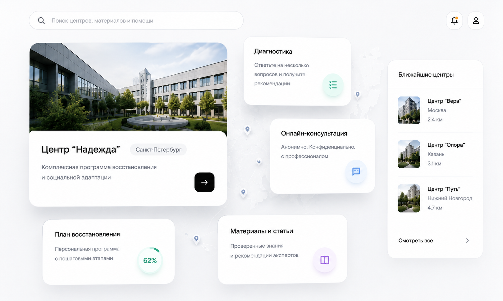

B2C · Публичная

Платформа для людей
Спокойный путь к помощи: диагностика, проверенные центры, материалы и поддержка без осуждения.
- Мини-диагностика и понятные рекомендации
- Каталог проверенных центров с фильтрами
- База знаний для родственников и специалистов
- Горячая линия и заявка на консультацию